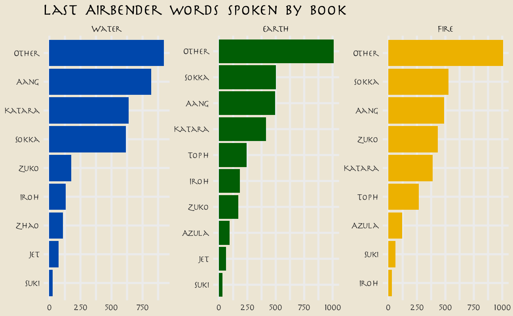
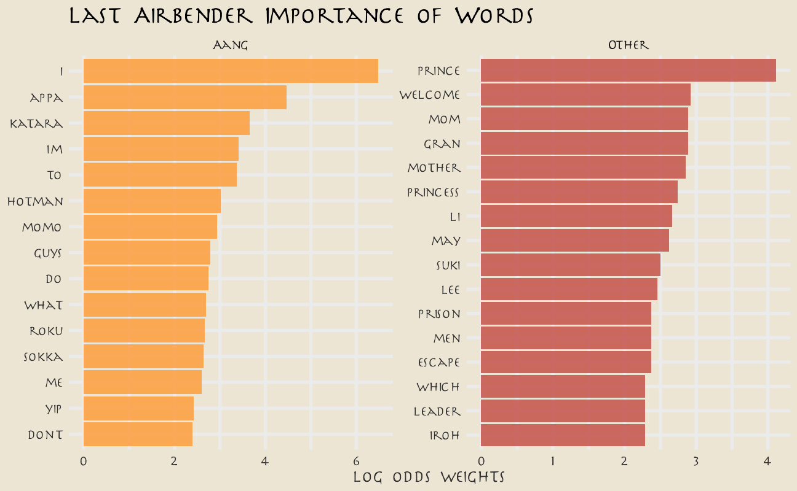
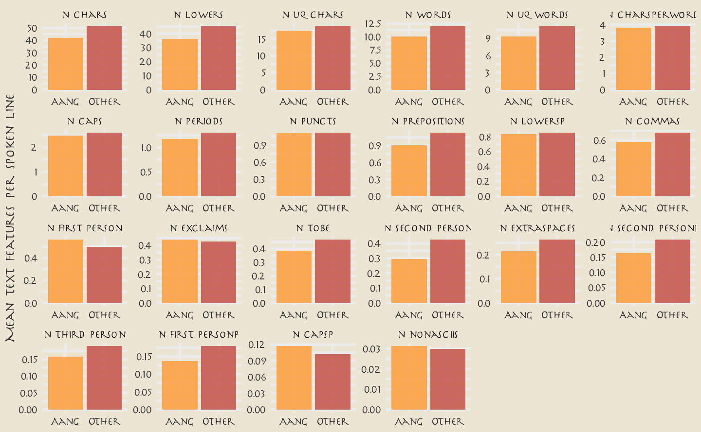
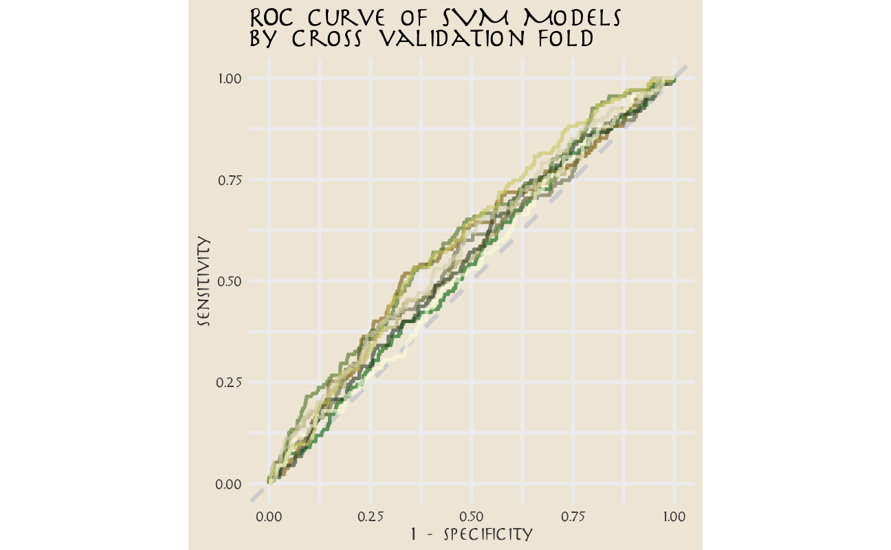
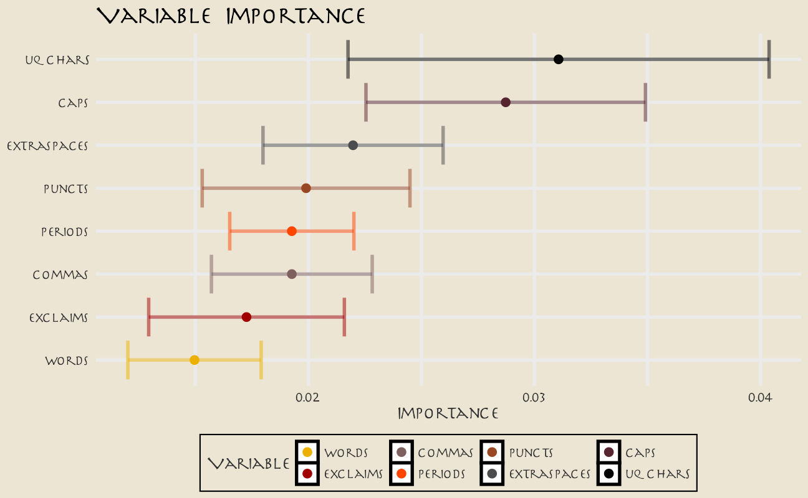

Last updated: 2021-09-09
Checks: 7 0
Knit directory: myTidyTuesday/
This reproducible R Markdown analysis was created with workflowr (version 1.6.2). The Checks tab describes the reproducibility checks that were applied when the results were created. The Past versions tab lists the development history.
Great! Since the R Markdown file has been committed to the Git repository, you know the exact version of the code that produced these results.
Great job! The global environment was empty. Objects defined in the global environment can affect the analysis in your R Markdown file in unknown ways. For reproduciblity it’s best to always run the code in an empty environment.
The command set.seed(20210907) was run prior to running the code in the R Markdown file. Setting a seed ensures that any results that rely on randomness, e.g. subsampling or permutations, are reproducible.
Great job! Recording the operating system, R version, and package versions is critical for reproducibility.
Nice! There were no cached chunks for this analysis, so you can be confident that you successfully produced the results during this run.
Great job! Using relative paths to the files within your workflowr project makes it easier to run your code on other machines.
Great! You are using Git for version control. Tracking code development and connecting the code version to the results is critical for reproducibility.
The results in this page were generated with repository version 03bfdad. See the Past versions tab to see a history of the changes made to the R Markdown and HTML files.
Note that you need to be careful to ensure that all relevant files for the analysis have been committed to Git prior to generating the results (you can use wflow_publish or wflow_git_commit). workflowr only checks the R Markdown file, but you know if there are other scripts or data files that it depends on. Below is the status of the Git repository when the results were generated:
Ignored files:
Ignored: .Rhistory
Ignored: .Rproj.user/
Ignored: catboost_info/
Ignored: data/2021-09-08/
Ignored: data/acs_poverty.rds
Ignored: data/grainstocks.rds
Ignored: data/hike_data.rds
Ignored: data/us_states.rds
Ignored: data/weatherstats_toronto_daily.csv
Unstaged changes:
Modified: code/_common.R
Note that any generated files, e.g. HTML, png, CSS, etc., are not included in this status report because it is ok for generated content to have uncommitted changes.
These are the previous versions of the repository in which changes were made to the R Markdown (analysis/LastAirbender.Rmd) and HTML (docs/LastAirbender.html) files. If you’ve configured a remote Git repository (see ?wflow_git_remote), click on the hyperlinks in the table below to view the files as they were in that past version.
| File | Version | Author | Date | Message |
|---|---|---|---|---|
| Rmd | 03bfdad | opus1993 | 2021-09-09 | remove dependency on pdf in graphics |
Lately Julia Silge has been publishing screencasts demonstrating how to use the tidymodels framework, from first steps in modeling to how to evaluate complex models. Today‚Äôs example admittedly does not result in the best performing model you‚Äôll ever see, but it is really fun and uses this week‚Äôs #TidyTuesday dataset on Avatar: The Last Airbender. üî•, üåè, üåä, üí®
This week’s #TidyTuesday dataset is from episodes of Avatar: The Last Airbender. Our modeling goal is to predict the speaker of each line of dialogue.
avatar <- tidytuesdayR::tt_load("2020-08-11")
Downloading file 1 of 2: `avatar.csv`
Downloading file 2 of 2: `scene_description.csv`avatar_raw <- avatar$avatar
avatar_raw %>%
count(character, sort = TRUE) %>%
head() %>%
knitr::kable(caption = "The 6 characters with the most lines")| character | n |
|---|---|
| Scene Description | 3393 |
| Aang | 1796 |
| Sokka | 1639 |
| Katara | 1437 |
| Zuko | 776 |
| Toph | 507 |
Rows with Scene Description are not dialogue; the main character Aang speaks the most lines overall. How does this change through the three “books” of the show?
avatar_raw %>%
filter(!is.na(character_words)) %>%
mutate(
book = fct_inorder(book),
character = fct_lump_n(character, 10)
) %>%
count(book, character) %>%
mutate(character = reorder_within(character, n, book)) %>%
ggplot(aes(n, character, fill = book)) +
geom_col(show.legend = FALSE) +
facet_wrap(~book, scales = "free") +
scale_y_reordered() +
scale_fill_manual(values = c(
avatar_pal("WaterTribe")(1),
avatar_pal("EarthKingdom")(1),
avatar_pal("FireNation")(1)
)) +
labs(
y = NULL, x = NULL,
title = "Last Airbender words spoken by book"
)
Let’s create a dataset for our modeling question, and look at a few example lines.
avatar <- avatar_raw %>%
filter(!is.na(character_words)) %>%
mutate(aang = if_else(character == "Aang", "Aang", "Other")) %>%
dplyr::select(aang, book, text = character_words)
avatar %>%
filter(aang == "Aang") %>%
sample_n(10) %>%
pull(text) %>%
knitr::kable()| x |
|---|
| You really think so? |
| Hey, I just found out this morning! |
| Good to see you here. |
| Well, if I’m going to the Eastern Air Temple, Appa and I can drop you off at Chameleon Bay to see your dad. |
| I never thought I’d miss grass this much! |
| I’ll do whatever it takes. |
| You’re just a curly tailed blue nose. |
| Uh … no one told us we had to have passports. |
| No self-control … |
| Just some dance movements. |
This… may be a challenge.
What are the highest log odds words from Aang and other speakers?
avatar_lo <- avatar %>%
unnest_tokens(word, text) %>%
count(aang, word) %>%
bind_log_odds(aang, word, n) %>%
arrange(-log_odds_weighted)
avatar_lo %>%
group_by(aang) %>%
top_n(n = 15, wt = log_odds_weighted) %>%
ungroup() %>%
mutate(word = reorder(word, log_odds_weighted)) %>%
ggplot(aes(log_odds_weighted, word, fill = aang)) +
geom_col(alpha = 0.8, show.legend = FALSE) +
facet_wrap(~aang, scales = "free") +
scale_fill_avatar(palette = "AirNomads") +
labs(
y = NULL, x = "log odds weights",
title = "Last Airbender Importance of Words"
)
These words make sense, but the counts are probably too low to build a good model with. Instead, let’s try using text features like the number of punctuation characters, number of pronons, and so forth.
tf <- textfeatures(
avatar,
sentiment = FALSE, word_dims = 0,
normalize = FALSE, verbose = FALSE
)
tf %>%
bind_cols(avatar) %>%
group_by(aang) %>%
summarise(across(starts_with("n_"), mean)) %>%
pivot_longer(starts_with("n_"), names_to = "text_feature") %>%
filter(value > 0.01) %>%
mutate(text_feature = fct_reorder(text_feature, -value)) %>%
ggplot(aes(aang, value, fill = aang)) +
geom_col(position = "dodge", alpha = 0.8, show.legend = FALSE) +
facet_wrap(~text_feature, scales = "free", ncol = 6) +
scale_fill_avatar("AirNomads") +
labs(x = NULL, y = "Mean text features per spoken line")
You can read the definitions of these counts here. The differences in these features are what we want to build a model to use in prediction.
We can start by loading the tidymodels metapackage, and splitting our data into training and testing sets.
set.seed(123)
avatar_split <- initial_split(avatar, strata = aang)
avatar_train <- training(avatar_split)
avatar_test <- testing(avatar_split)Next, let’s create cross-validation resamples of the training data, to evaluate our models.
set.seed(234)
avatar_folds <- vfold_cv(avatar_train, strata = aang)Next, let’s preprocess our data to get it ready for modeling.
avatar_rec <- recipe(aang ~ text, data = avatar_train) %>%
step_downsample(aang) %>%
step_textfeature(text) %>%
step_zv(all_predictors()) %>%
step_normalize(all_predictors())
avatar_prep <- prep(avatar_rec)
avatar_prepData Recipe
Inputs:
role #variables
outcome 1
predictor 1
Training data contained 7494 data points and no missing data.
Operations:
Down-sampling based on aang [trained]
Text feature extraction for text [trained]
Zero variance filter removed 15 items [trained]
Centering and scaling for 12 items [trained]Let’s walk through the steps in this recipe.
recipe() what our model is going to be (using a formula here) and what data we are using.We’re mostly going to use this recipe in a workflow() so we don’t need to stress too much about whether to prep() or not. Since we are going to compute variable importance, we will need to come back to juice(avatar_prep).
Let’s compare two different models, a random forest model and a support vector machine model. We start by creating the model specifications.
rf_spec <- rand_forest(trees = 1000) %>%
set_engine("ranger") %>%
set_mode("classification")
svm_spec <- svm_rbf(cost = 0.5) %>%
set_engine("kernlab") %>%
set_mode("classification")Next let’s start putting together a tidymodels workflow(), a helper object to help manage modeling pipelines with pieces that fit together like Lego blocks. Notice that there is no model yet: Model: None.
avatar_wf <- workflow() %>%
add_recipe(avatar_rec)Now we can add a model, and the fit to each of the resamples. First, we can fit the random forest model.
all_cores <- parallelly::availableCores(omit = 1)
all_coressystem
11 future::plan("multisession", workers = all_cores) # on Windows
set.seed(1234)
rf_rs <- avatar_wf %>%
add_model(rf_spec) %>%
fit_resamples(
resamples = avatar_folds,
metrics = metric_set(roc_auc, accuracy, sens, spec),
control = control_grid(save_pred = TRUE)
)Second, we can fit the support vector machine model.
set.seed(2345)
svm_rs <- avatar_wf %>%
add_model(svm_spec) %>%
fit_resamples(
resamples = avatar_folds,
metrics = metric_set(roc_auc, accuracy, sens, spec),
control = control_grid(save_pred = TRUE)
)We have fit each of our candidate models to our resampled training set.
Let have a look at how we did.
collect_metrics(rf_rs) %>% knitr::kable()| .metric | .estimator | mean | n | std_err | .config |
|---|---|---|---|---|---|
| accuracy | binary | 0.5393722 | 10 | 0.0064483 | Preprocessor1_Model1 |
| roc_auc | binary | 0.5501353 | 10 | 0.0062918 | Preprocessor1_Model1 |
| sens | binary | 0.5307905 | 10 | 0.0085026 | Preprocessor1_Model1 |
| spec | binary | 0.5412460 | 10 | 0.0080031 | Preprocessor1_Model1 |
conf_mat_resampled(rf_rs) %>% knitr::kable()| Prediction | Truth | Freq |
|---|---|---|
| Aang | Aang | 71.5 |
| Aang | Other | 282.0 |
| Other | Aang | 63.2 |
| Other | Other | 332.7 |
Well, that is underwhelming!
collect_metrics(svm_rs) %>% knitr::kable()| .metric | .estimator | mean | n | std_err | .config |
|---|---|---|---|---|---|
| accuracy | binary | 0.5270838 | 10 | 0.0083769 | Preprocessor1_Model1 |
| roc_auc | binary | 0.5683824 | 10 | 0.0079888 | Preprocessor1_Model1 |
| sens | binary | 0.5790768 | 10 | 0.0192877 | Preprocessor1_Model1 |
| spec | binary | 0.5156948 | 10 | 0.0122867 | Preprocessor1_Model1 |
conf_mat_resampled(svm_rs) %>% knitr::kable()| Prediction | Truth | Freq |
|---|---|---|
| Aang | Aang | 78.0 |
| Aang | Other | 297.7 |
| Other | Aang | 56.7 |
| Other | Other | 317.0 |
Different, but not really better! The SVM model is better able to identify the positive cases but at the expense of the negative cases. Overall, we definitely see that this is a hard problem that we barely are able to have any predictive ability for.
Let’s say we are more interested in detecting Aang’s lines, even at the expense of the false positives.
svm_rs %>%
collect_predictions() %>%
group_by(id) %>%
roc_curve(aang, .pred_Aang) %>%
ggplot(aes(1 - specificity, sensitivity, color = id)) +
geom_abline(lty = 2, color = "gray80", size = 1.5) +
geom_path(show.legend = FALSE, alpha = 0.6, size = 1.2) +
scale_color_avatar(palette = "EarthKingdom") +
coord_equal() +
labs(title = "ROC curve of SVM Models\nby cross validation fold")
This plot highlights how this model is barely doing better than guessing.
Keeping in mind the realities of our model performance, let’s talk about how to compute variable importance for a model like an SVM, which does not have information within it about variable importance like a linear model or a tree-based model. In this case, we can use a method like permutation of the variables.
set.seed(345)
avatar_imp <- avatar_wf %>%
add_model(svm_spec) %>%
fit(avatar_train) %>%
extract_fit_parsnip() %>%
vi(
method = "permute", nsim = 10,
target = "aang", metric = "auc", reference_class = "Other",
pred_wrapper = kernlab::predict, train = juice(avatar_prep)
)
avatar_imp %>%
slice_max(Importance, n = 8) %>%
mutate(
Variable = str_remove(Variable, "textfeature_text_n_"),
Variable = fct_reorder(Variable, Importance)
) %>%
ggplot(aes(Importance, Variable, color = Variable)) +
geom_errorbar(aes(xmin = Importance - StDev, xmax = Importance + StDev),
alpha = 0.5, size = 1.3, show.legend = FALSE
) +
geom_point(size = 3) +
scale_color_avatar(palette = "FireNation") +
labs(
y = NULL,
title = "Variable Importance"
)
These are the text features that are most important globally for whether a line was spoken by Aang or not.
Finally, we can return to the testing data to confirm that our (admittedly lackluster) performance is about the same.
avatar_final <- avatar_wf %>%
add_model(svm_spec) %>%
last_fit(avatar_split)
avatar_final %>%
collect_metrics() %>%
knitr::kable()| .metric | .estimator | .estimate | .config |
|---|---|---|---|
| accuracy | binary | 0.5484388 | Preprocessor1_Model1 |
| roc_auc | binary | 0.5564722 | Preprocessor1_Model1 |
avatar_final %>%
collect_predictions() %>%
conf_mat(aang, .pred_class) Truth
Prediction Aang Other
Aang 238 917
Other 211 1132
sessionInfo()R version 4.1.1 (2021-08-10)
Platform: x86_64-w64-mingw32/x64 (64-bit)
Running under: Windows 10 x64 (build 19043)
Matrix products: default
locale:
[1] LC_COLLATE=English_United States.1252
[2] LC_CTYPE=English_United States.1252
[3] LC_MONETARY=English_United States.1252
[4] LC_NUMERIC=C
[5] LC_TIME=English_United States.1252
attached base packages:
[1] stats graphics grDevices utils datasets methods
[7] base
other attached packages:
[1] kernlab_0.9-29 ranger_0.13.1 vctrs_0.3.8
[4] rlang_0.4.11 vip_0.3.2 themis_0.1.4
[7] textrecipes_0.4.1 yardstick_0.0.8 workflowsets_0.1.0
[10] workflows_0.2.3 tune_0.1.6 rsample_0.1.0
[13] recipes_0.1.16 parsnip_0.1.7.900 modeldata_0.1.1
[16] infer_1.0.0 dials_0.0.9.9000 broom_0.7.9
[19] tidymodels_0.1.3 showtext_0.9-4 showtextdb_3.0
[22] sysfonts_0.8.5 tidylo_0.1.0 textfeatures_0.3.3
[25] tidytext_0.3.1 tvthemes_1.1.1 forcats_0.5.1
[28] stringr_1.4.0 dplyr_1.0.7 purrr_0.3.4
[31] readr_2.0.1 tidyr_1.1.3 tibble_3.1.4
[34] ggplot2_3.3.5 tidyverse_1.3.1 scales_1.1.1
[37] workflowr_1.6.2
loaded via a namespace (and not attached):
[1] utf8_1.2.2 proto_1.0.0 R.utils_2.10.1
[4] tidyselect_1.1.1 grid_4.1.1 pROC_1.18.0
[7] munsell_0.5.0 codetools_0.2-18 ragg_1.1.3
[10] future_1.22.1 withr_2.4.2 colorspace_2.0-2
[13] highr_0.9 knitr_1.34 rstudioapi_0.13
[16] Rttf2pt1_1.3.9 listenv_0.8.0 labeling_0.4.2
[19] git2r_0.28.0 farver_2.1.0 bit64_4.0.5
[22] DiceDesign_1.9 rprojroot_2.0.2 mlr_2.19.0
[25] parallelly_1.28.1 generics_0.1.0 ipred_0.9-11
[28] xfun_0.25 R6_2.5.1 doParallel_1.0.16
[31] tfse_0.5.0 lhs_1.1.3 cachem_1.0.6
[34] assertthat_0.2.1 promises_1.2.0.1 vroom_1.5.4
[37] nnet_7.3-16 emojifont_0.5.5 gtable_0.3.0
[40] globals_0.14.0 timeDate_3043.102 BBmisc_1.11
[43] systemfonts_1.0.2 splines_4.1.1 extrafontdb_1.0
[46] selectr_0.4-2 checkmate_2.0.0 yaml_2.2.1
[49] modelr_0.1.8 backports_1.2.1 httpuv_1.6.2
[52] tokenizers_0.2.1 extrafont_0.17 tools_4.1.1
[55] lava_1.6.10 usethis_2.0.1 ellipsis_0.3.2
[58] jquerylib_0.1.4 Rcpp_1.0.7 plyr_1.8.6
[61] parallelMap_1.5.1 rpart_4.1-15 ParamHelpers_1.14
[64] viridis_0.6.1 haven_2.4.3 hrbrthemes_0.8.0
[67] fs_1.5.0 here_1.0.1 furrr_0.2.3
[70] unbalanced_2.0 magrittr_2.0.1 data.table_1.14.0
[73] magick_2.7.3 reprex_2.0.1 RANN_2.6.1
[76] GPfit_1.0-8 SnowballC_0.7.0 whisker_0.4
[79] ROSE_0.0-4 R.cache_0.15.0 hms_1.1.0
[82] evaluate_0.14 readxl_1.3.1 gridExtra_2.3
[85] compiler_4.1.1 crayon_1.4.1 R.oo_1.24.0
[88] htmltools_0.5.2 later_1.3.0 tzdb_0.1.2
[91] lubridate_1.7.10 DBI_1.1.1 dbplyr_2.1.1
[94] MASS_7.3-54 Matrix_1.3-4 cli_3.0.1
[97] R.methodsS3_1.8.1 parallel_4.1.1 gower_0.2.2
[100] pkgconfig_2.0.3 xml2_1.3.2 foreach_1.5.1
[103] bslib_0.3.0 hardhat_0.1.6 tidytuesdayR_1.0.1
[106] prodlim_2019.11.13 rvest_1.0.1 janeaustenr_0.1.5
[109] digest_0.6.27 rmarkdown_2.10 cellranger_1.1.0
[112] fastmatch_1.1-3 gdtools_0.2.3 curl_4.3.2
[115] lifecycle_1.0.0 jsonlite_1.7.2 viridisLite_0.4.0
[118] fansi_0.5.0 pillar_1.6.2 lattice_0.20-44
[121] fastmap_1.1.0 httr_1.4.2 survival_3.2-11
[124] glue_1.4.2 conflicted_1.0.4 FNN_1.1.3
[127] iterators_1.0.13 bit_4.0.4 class_7.3-19
[130] stringi_1.7.4 sass_0.4.0 rematch2_2.1.2
[133] textshaping_0.3.5 styler_1.5.1 future.apply_1.8.1